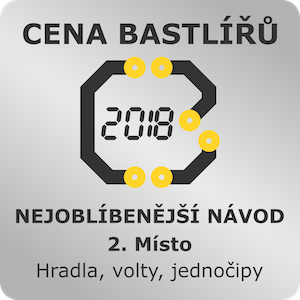

Teorie
Jaký je rozdíl mezi napětím a proudem? A mezi odporem a rezistorem?
Součástky
Dioda, tranzistor, rezistor, integrovaný obvod, hradla, snímače...
Programování
Jak připojit snímače k Arduinu? A jak motor? Proč ne přímo k vývodům?
Logické obvody
Jak se z jednoduchých logických funkcí poskládá tak složitá věc, jako je počítač?
Ocenění...
Napsali o knize...
-
CZ.NIC vydal dlouho očekávanou knihu Martina Malého o základech digitální elektroniky. Četl jsem ji v beta verzi a vřele ji doporučuji všem zájemcům o elektroniku, Arduino a další. Myslím že je srozumitelná i pro naprosté začátečníky, ale mně se hodně hodila jako člověku, který sice kdysi dávno tyhle věci vystudoval, ale nikdy v praxi nedělal. Ebook je ke stažení zdarma, tištěná verze je k mání za cenu mírnou.
Michal Valášek
-
Když jsem chodil do školy, to nejsložitější, co jsem kdy v rámci elektroniky a elektrotechniky stvořil, byl elektrický obvod se spínačem, baterií a žárovkou. A tím to tak nějak skončilo. Nějaké volty, ohmy, rezistory, kondenzátory a jiné kapacitátory šly mimo mě a nikdy jsem je nepochopil. Proto jsem se těšil na knihu Martina Malého, protože tuhle oblast bych přeci jen rád nastudoval malinko víc. No a s touhle knihou se mi to, myslím, povede, protože postupuje úplně jinak, než jak to bývá v učebnicích. Tam se začíná pojmy, vzorečky, teorií a pak, když zbyde čas, tak možná bude nějaký pokus. Tady se začíná pokusem (bez vysvětlování) a teprve pak se ten pokus rozebírá a přechází se k teorii. Což je optimální. Kniha je vzhledem k cennému a skvěle napsanému obsahu za hubičku a elektronická verze je dokonce (spadla mi čelist, když jsem to viděl) zdarma.
Miroslav Scalex Hlavička
-
Knížka je výborná, děkuji! Úplně jak psaná pro mě - věčný elektro začátečník, začínal jsem v 80 letech v elektro kroužku. Perfektně namixovaná praxe s teoriií. Proč takhle nemůžou vypadat učebnice třeba na 2. stupni ZŠ?
Jindřich Šaršon
-
Tolik AHA momentů už na prvních pár stranách jsem dlouho nezažil. Myslel jsem, že můj zájem o elektroniku byl již nenávratně zašlapán do prachu, ale zdá se, že tomu tak nemusí být. Díky, je to fakt perfektně (a vtipně) napsaný!
Tomáš Hellebrand
-
Je to po dlouhé době velký počin. Kniha je navýsost užitečná a popisuje přehledně úplné základy, na které se mnozí už stydí zeptat a pro začátečníky (syny) je to super kuchařka z nuly. Děkuji za ten nápad a děkuji za skvělou realizaci.
Miroslav Kovařík
-
Prečteno jedním dechem. Jako "bastlíř senior" bych pár témat řešil jinak, ale líbil se mi začátek, který nejprve začne praxí a pak teorií. Témat je zahrnuto hodně, celkem obstojně od každého něco. Samozřejmě o hradlech a o Arduinu by mohly vyjít díly zvlášť, ale to nebylo zřejmě cílem.
Martin Wolker
-
Dneska dorazily překvapivě rozsáhlé Hradla, volty a jednočipy od @adent. Z mého amatérského pohledu nadšeného batliče bez hlubších znalostí oboru je to vzdělávací počin roku.
@malyvedec
-
Prolistoval jsem PDF verzi a nakonec objednal papírovou verzi knihy Hradla, volty, jednočipy od Martina Malého z #EdiceCZNIC. Už se těším až dorazí! Vypadá to velmi stravitelně a srozumitelně, dobrá práce @adent! :-)
@jiriprokop
-
Hradla, volty, jednočipy. Ten pocit, když čtete naučnou knihu jako beletrii: znovu a znovu se vracíte k pasážím, nejdete spát dlouho po půlnoci, zapomínáte se najíst... Proč ta kniha neexistovala, když mi bylo 14? Big h/t @adent A děkuji! :-)
@onslm